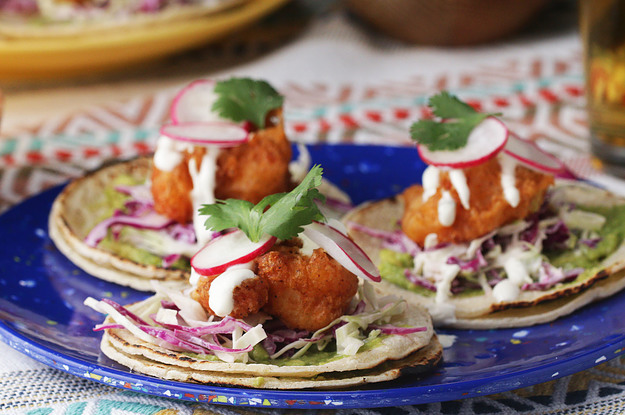

Beer Battered Shimp Tacos

Description
The beer battered shrimp fried to crispy perfection, great for any family gathering
Ingredients
Sauce
- 1 Cup Sour Cream
- 2 Tablespoons lime juice
- 1 Tablespoon lime zest
Coleslaw
- 1 cup red cabbage, julienned
- 1 cup green cabbage, julienned
- 1 jalapeno, minced
- 1 lime lime juice
Shrimp
- 1 lb shrimp, peeled and deveined
- salt, to taste
- 1 cup flour
- 1 teaspoon garlic powder
- 1 teaspoon smoked paprika
- 1/4 teaspoon cayenne
- 1/2 teaspoon baking powder
- 1 cup beer
- oil, for frying
To Serve
- corn tortilla
- guacamole
- radish, sliced
- guacamole